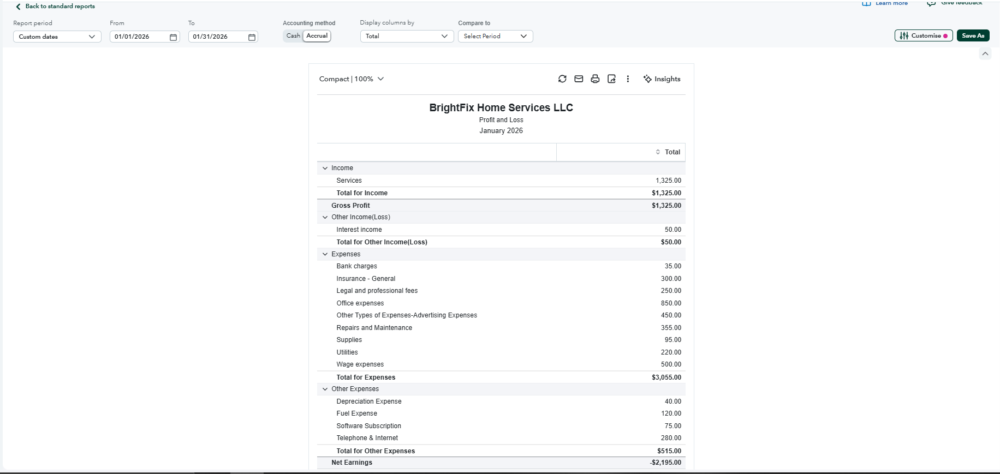
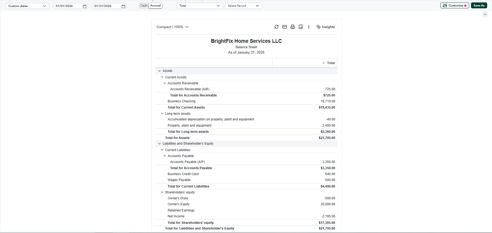
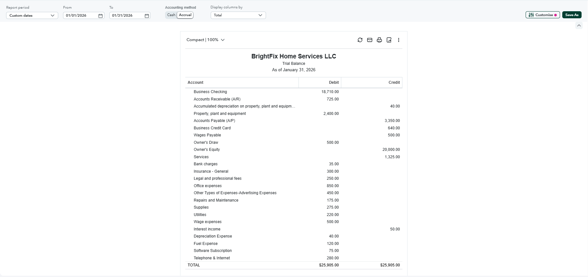
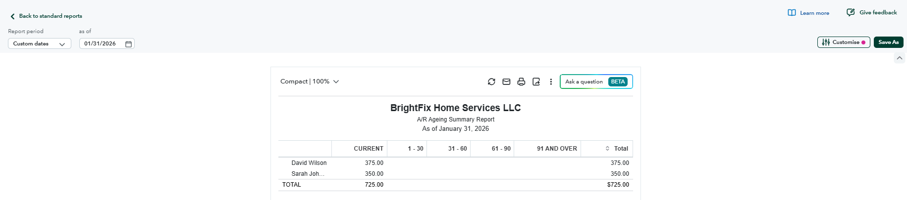
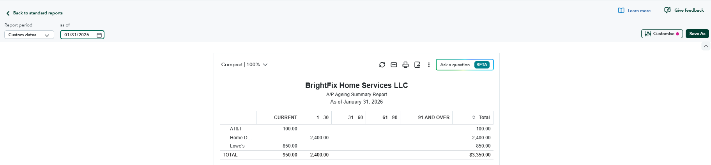
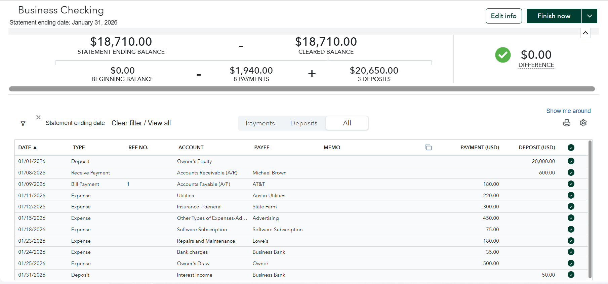
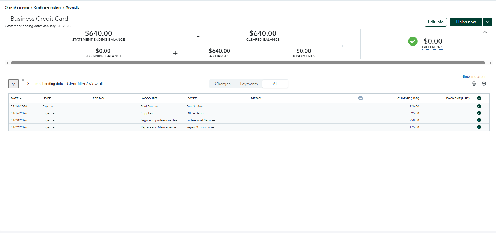

Sample bookkeeping case study for a fictional home services business, demonstrating transaction management, reconciliations, account review, cleanup, and month-end financial reporting in QuickBooks Online.
Sample / Practice ProjectThis project demonstrates a complete monthly bookkeeping workflow in QuickBooks Online, from transaction categorization through reconciliations and month-end financial reporting.
January 2026 — reviewed revenue, other income, operating expenses, and net earnings.

January 31, 2026 — reviewed assets, liabilities, and shareholders' equity.

Verified that total debits equal total credits at $25,905.

Reviewed outstanding customer balances totaling $725.

Reviewed outstanding vendor balances totaling $3,350.

Reconciled the business checking account to a $0.00 difference.

Reconciled the business credit card to a $0.00 difference across four charges.

QuickBooks Online • Bookkeeping • Bank Reconciliation • Credit Card Reconciliation • Accounts Receivable • Accounts Payable • Expense Classification • Chart of Accounts • Month-End Close • Financial Reporting • Trial Balance